An island’s signature fish introduced to a Bangkok crowd through play, tasting and a photograph worth keeping.
This project is a pop-up promotion event designed for Jeju Island to showcase seafood products from the island, with the highlight being the Jeju Olive Flounder.
The hard part is that the hero product is unfamiliar. Olive flounder is a name a Bangkok shopper has no reference for, and a single fish is not a story. The booth had to carry an unknown species, a place most visitors have never been to, and a promotional brief with prizes attached, without collapsing into a fairground stall.
A Thai shopper does not buy an unfamiliar fish. They buy a dish they have already tasted, from a place they can picture.
Korean food has strong recognition in Bangkok; the island of Jeju has almost none. The brand equity available was national, so the booth had to build the island’s own signals from scratch.
Every food promotion in the hall offers a tasting, so tasting alone does not differentiate. What differs is whether the visitor stays long enough to hear where the food came from.
Giveaway booths collect queues of people who want the prize and nothing else. The claw machine was kept small and placed so that it feeds the display, not the exit.
Already eats Korean weekly and follows it online. Will try anything labelled Korean, and is the visitor most likely to remember a species name if it is given to them clearly.
Comes for the outing. The claw machine and the photo booth are what they came for; the tasting is what they leave with.
Wants to see the packed product, the cut and the cold chain. Needs a corner of the booth that is not a game.
Design intent, not measured data. Bar length is the share of passing visitors the layout is built to carry to each step.
The three demands are met in three different parts of the plan, which is why the booth is zoned rather than open.
The booth is staged as a piece of the island: the volcanic silhouette and the guardian stone figures on the back wall, the seabed at floor level, and the fish itself framed like an exhibit between them. Every activity in the brief was then given a place on that stage rather than a stand of its own.
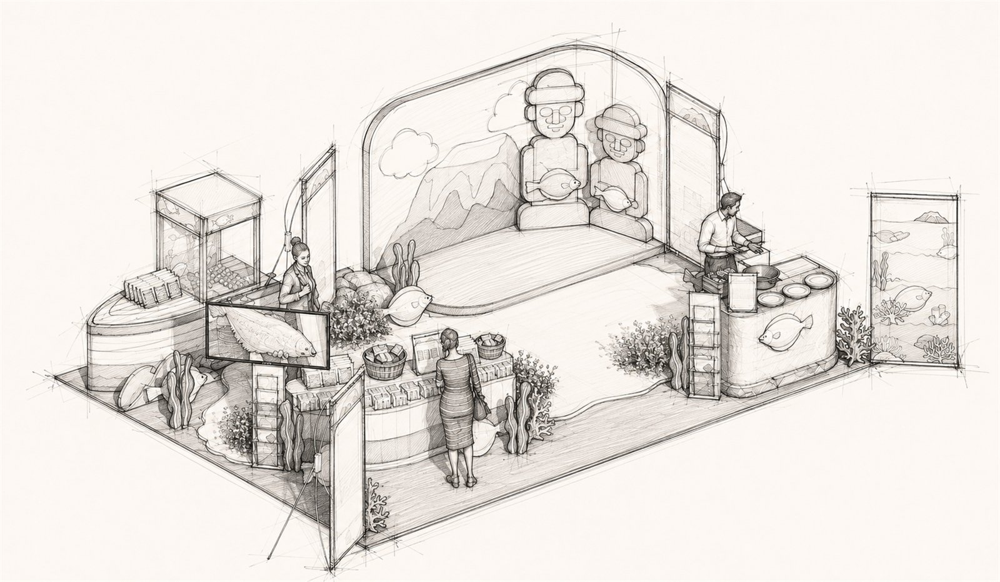
Packaged seafood on a curved counter, with the olive flounder shown large on a framed panel above it.
A live cooking counter on the open side, so the smell of the dish reaches the aisle before the graphics do.
The prize mechanic, kept to one cabinet at the corner where it is visible from two aisles at once.
The island wall doubles as the backdrop: visitors photograph themselves in front of Jeju and receive a prize for it.
Mountain and guardian-figure graphic held at full height, giving the booth a single recognisable face down the hall.
Low, curved and continuous, so browsing runs parallel to traffic instead of blocking it.
The claw cabinet takes the outer corner, where its queue forms outside the booth rather than inside it.
Tasting is separated from the game so smell, heat and waste stay clear of the display and the photographs.
The middle of the plan is floor, not furniture. It is where the photo is taken and where a crowd can stand without stopping the loop.
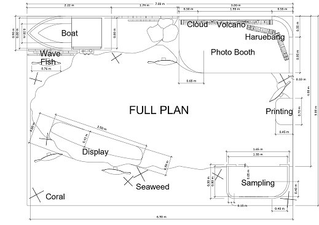
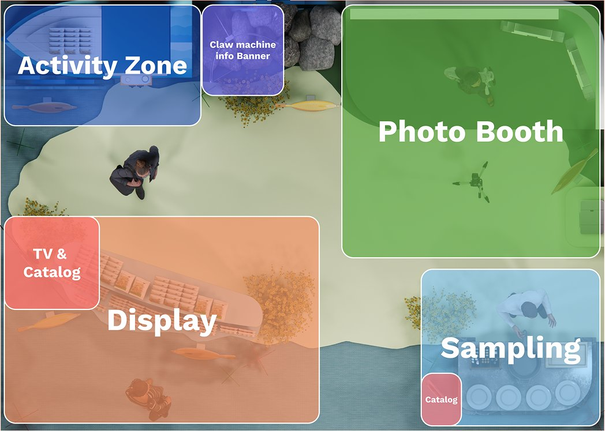
The wall gives the booth a place before it gives it a product.
One free game, no registration, no explanation needed.
Packaged product at hand height between the game and the food.
Cooked in front of the visitor and served in one step.
A picture against the island wall, exchanged for a prize.
From the aisle the booth reads as a place, not a promotion. The mountain silhouette and the two stone figures do that work in one glance, before any text is read.
The sequence is deliberate. The game costs nothing and gives permission to stay; the counter is passed on the way to the food, so the packaging is seen before it is offered.
The prize is claimed at the photo booth rather than the exit, so the last thing a visitor does in the booth is put Jeju in their own camera roll.
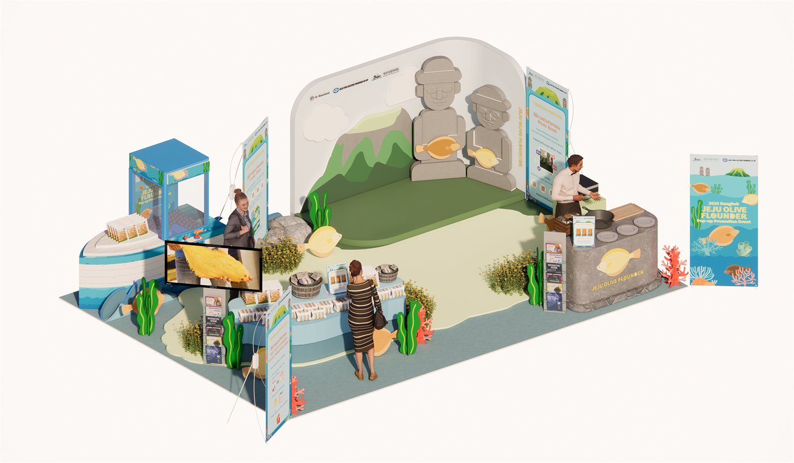
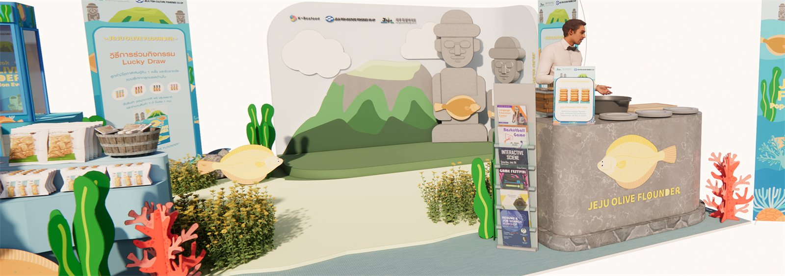
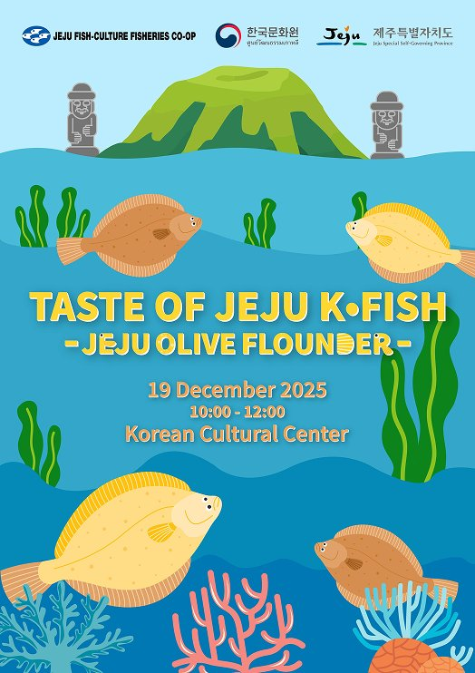
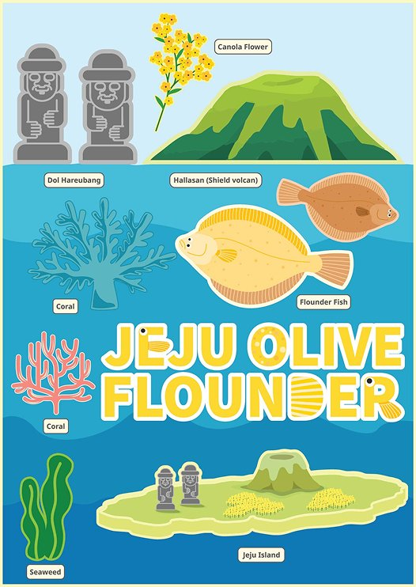
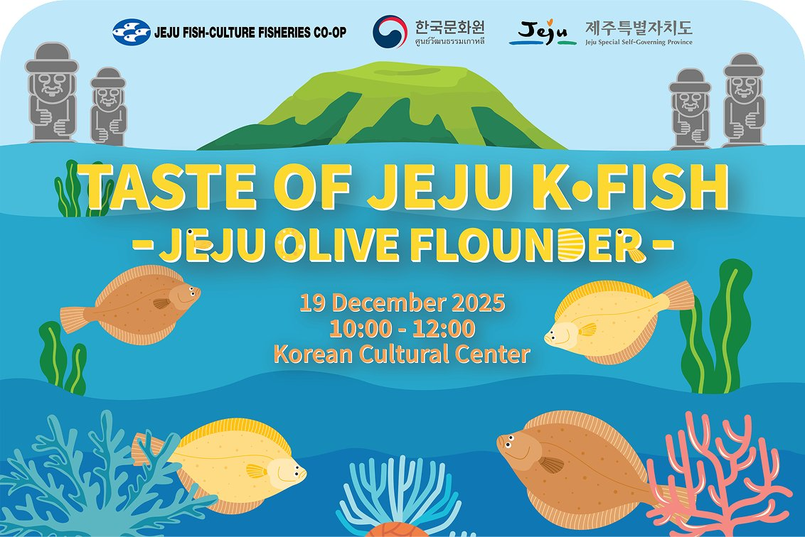
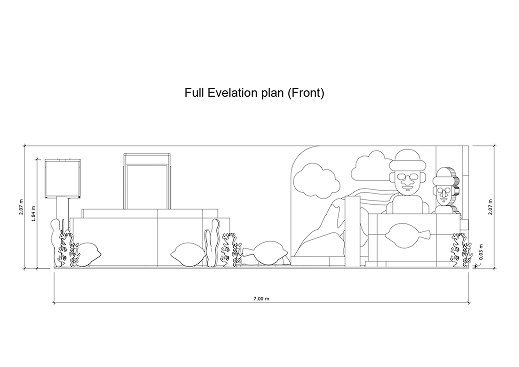
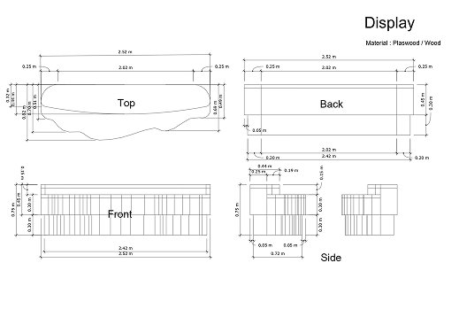
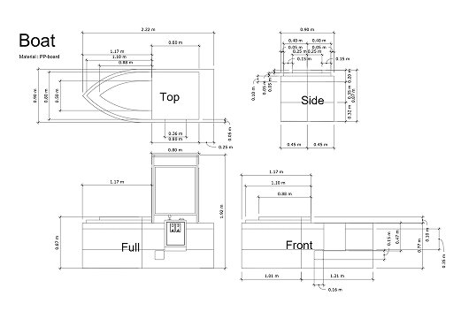
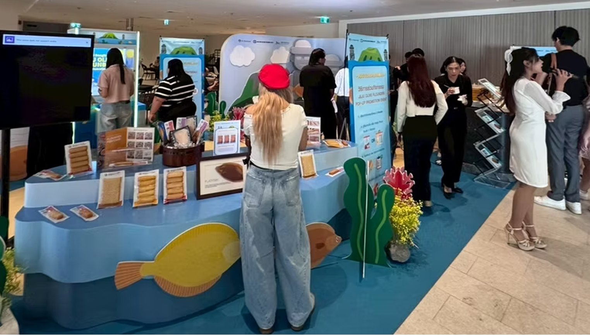
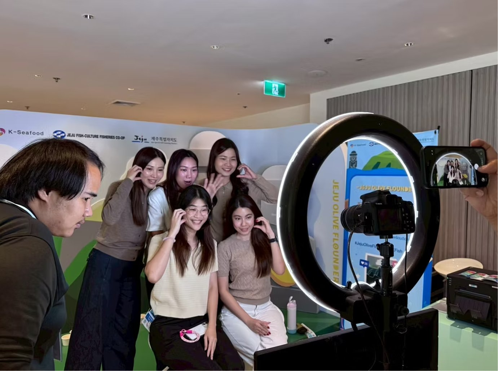
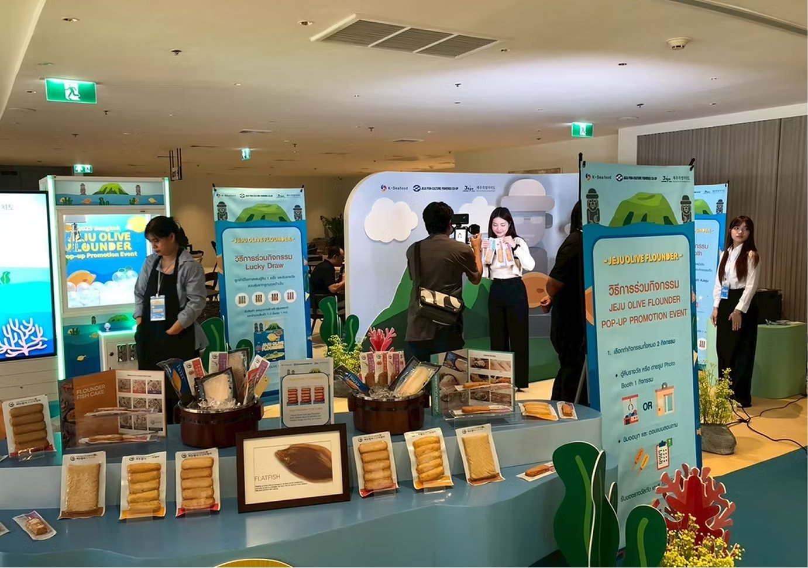
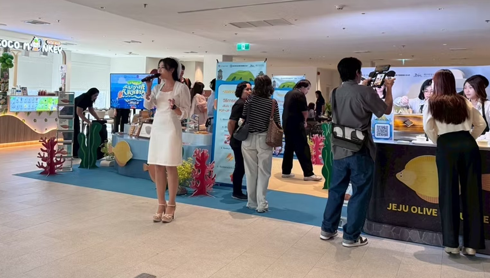
Leading with the island rather than the fish gave visitors somewhere to put the new name. The species became a detail of a story they could already picture.
Making the identity wall the photo backdrop meant every visitor photograph carried the branding, without a single extra structure being built for it.
The claw machine attracted more attention than the tasting and pulled some visitors straight past the product. I would move the game deeper into the plan and put the cooking counter on the corner, so the first thing that stops people is the food.